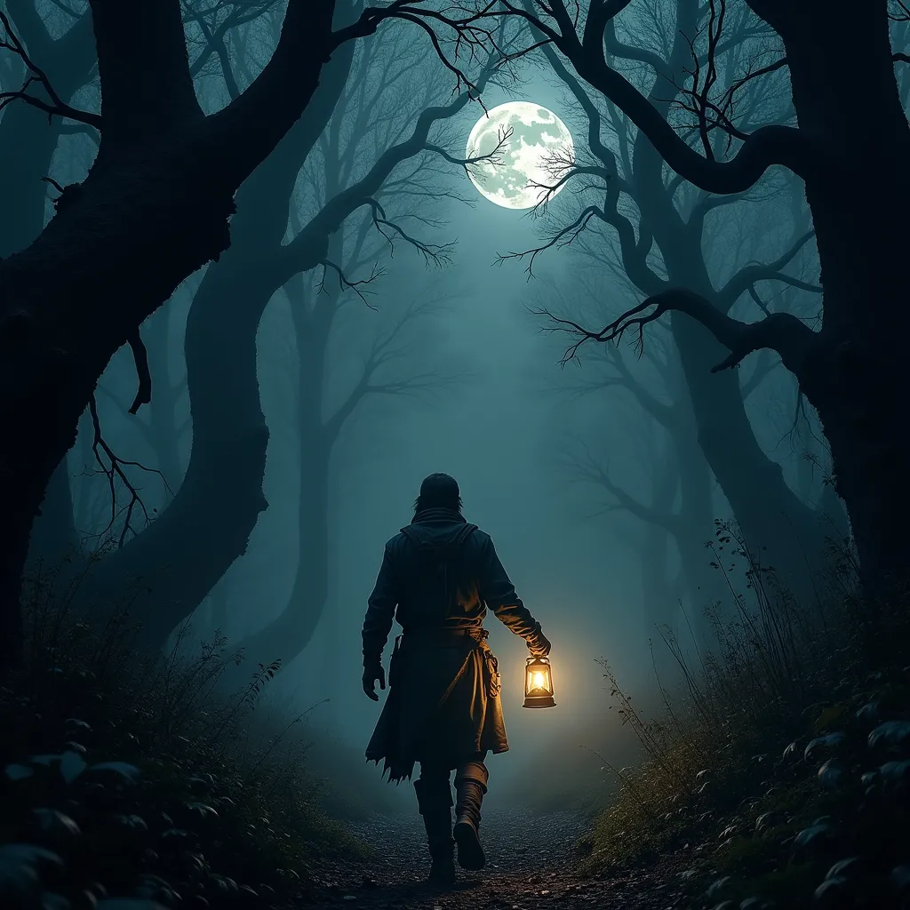

Temný les, kde měsíc sotva proráží skrz husté koruny stromů, je obávaným místem. Ty jsi lovec pokladů a přišel jsi sem hledat Srdce stínů – prastarý artefakt, který prý dokáže ovládat noční můry. Každý krok do hlubin lesa tě přibližuje k neznámému, možná nebezpečnému.
Jedním směrem vidíš cestu, po které se můžeš vydat, a druhým směrem vidíš stopy nějakého zvířete. Zároveň v dálce zahlédneš světlo, které se ti zdá být zvláštní. Co uděláš?